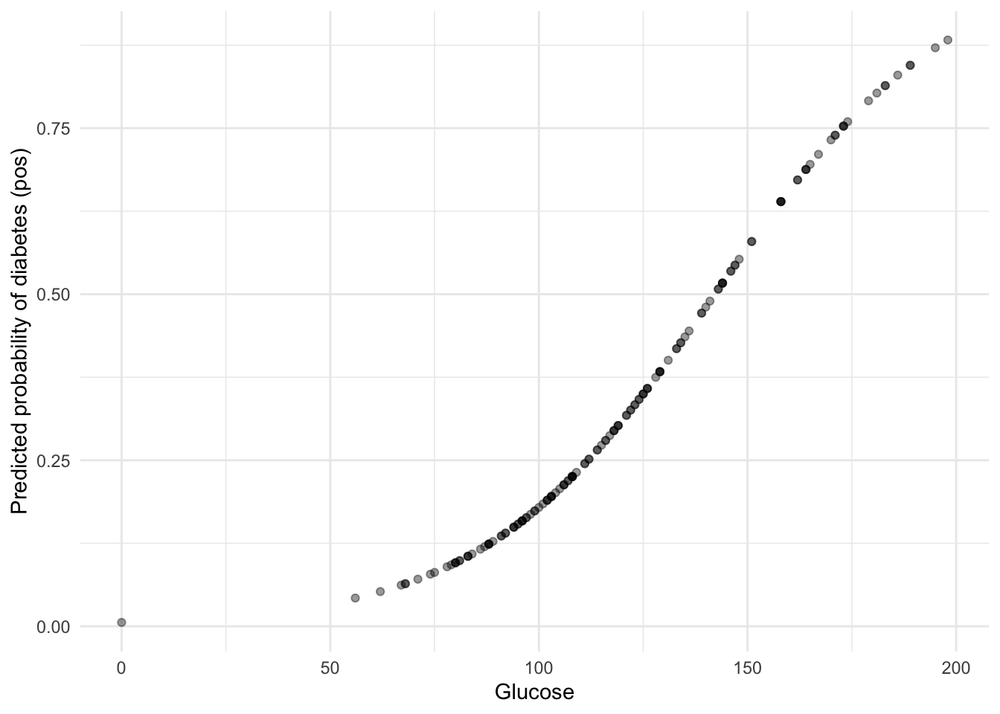

library(reticulate)
# one-off setup (if you haven't done it yet)
# install_miniconda()
##conda_create(
## envname = "hds-python",
## python_version = "3.11",
## packages = c("numpy", "pandas", "matplotlib", "seaborn", "scikit-learn")
##)
use_condaenv("hds-python", required = TRUE)
#py_config()
#conda_install("hds-python", c("jupyter", "plotly"))(0) Unified Modelling Frameworks in R & Python
1. Why frameworks like tidymodels and scikit-learn?
In both R and Python, there are many ways to fit models:
- R:
lm(),glm(),rpart(),randomForest(),xgboost(), … - Python:
statsmodels, custom NumPy/SciPy code, or many different classes insklearn
Each function or class often has its own syntax, argument names and prediction methods.
This becomes difficult when we want to:
- swap one model for another,
- compare models fairly,
- build end-to-end pipelines with preprocessing + model + evaluation,
- do hyperparameter tuning cleanly and without data leakage.
Two ecosystems help us solve this:
-
tidymodels in R
- scikit-learn in Python
Both provide a unified, consistent interface for models, preprocessing, pipelines and tuning.
2. Tidymodels (R): model specification + engine
Note
Docs:
- Tidymodels homepage: https://www.tidymodels.org/
- Getting started: https://www.tidymodels.org/start/
- parsnip reference: https://parsnip.tidymodels.org/reference/index.html
In tidymodels, we separate:
-
What kind of model we want → the specification
- How it is implemented → the engine
2.1 Model specification
We declare high-level models like this (classification / regression only, no engine yet):
#R
library(tidymodels)── Attaching packages ────────────────────────────────────── tidymodels 1.4.1 ──✔ broom 1.0.10 ✔ recipes 1.3.1
✔ dials 1.4.2 ✔ rsample 1.3.1
✔ dplyr 1.1.4 ✔ tailor 0.1.0
✔ ggplot2 4.0.0 ✔ tidyr 1.3.1
✔ infer 1.0.9 ✔ tune 2.0.1
✔ modeldata 1.5.1 ✔ workflows 1.3.0
✔ parsnip 1.3.3 ✔ workflowsets 1.1.1
✔ purrr 1.2.0 ✔ yardstick 1.3.2 ── Conflicts ───────────────────────────────────────── tidymodels_conflicts() ──
✖ purrr::discard() masks scales::discard()
✖ dplyr::filter() masks stats::filter()
✖ dplyr::lag() masks stats::lag()
✖ recipes::step() masks stats::step()log_spec <- logistic_reg(mode = "classification")
tree_spec <- decision_tree(mode = "classification")
rf_spec <- rand_forest(mode = "regression")
knn_spec <- nearest_neighbor(mode = "classification")
log_specLogistic Regression Model Specification (classification)
Computational engine: glm tree_specDecision Tree Model Specification (classification)
Computational engine: rpart This does not fit a model yet. It just says:
- “I want a logistic regression classifier”
- “I want a decision tree for classification”
- etc.
2.2 Engines: how the model is actually fit
The engine is the backend algorithm. We choose it with set_engine():
#R
log_spec_glm <- logistic_reg(mode = "classification") %>%
set_engine("glm") # uses base R glm() with binomial family
log_spec_glmnet <- logistic_reg(mode = "classification") %>%
set_engine("glmnet") # uses penalised regression (elastic net)
tree_spec_rpart <- decision_tree(mode = "classification") %>%
set_engine("rpart") # uses rpart (CART)
boost_spec_xgb <- boost_tree(mode = "classification") %>%
set_engine("xgboost") # uses xgboost libraryDifferent engines = different algorithms for the same kind of model.
2.3 Fitting a logistic regression model with tidymodels
Below we use the Pima Indians diabetes data and compare to the glm() style you already know.
#R
library(mlbench)
data("PimaIndiansDiabetes")
pima <- PimaIndiansDiabetes %>%
dplyr::select(glucose, mass, age, diabetes) %>%
# we want "pos" (diabetes present) as the event of interest
dplyr::mutate(diabetes = forcats::fct_relevel(diabetes, "pos")) # here we are saying that what we are trying to predict (i=our positive, 1 class is "pos")
split <- initial_split(pima, prop = 0.8, strata = diabetes)
pima_train <- training(split)
pima_test <- testing(split)
# Model spec + engine
logistic_spec <-
logistic_reg(mode = "classification") %>%
set_engine("glm") # internally: glm(..., family = binomial)Fit the model using fit() with a formula interface:
#R
logistic_fit <-
logistic_spec %>%
fit(diabetes ~ glucose, data = pima_train)
logistic_fitparsnip model object
Call: stats::glm(formula = diabetes ~ glucose, family = stats::binomial,
data = data)
Coefficients:
(Intercept) glucose
5.13837 -0.03615
Degrees of Freedom: 613 Total (i.e. Null); 612 Residual
Null Deviance: 793.9
Residual Deviance: 658.5 AIC: 662.5Inspect the coefficients (these are log-odds / logit coefficients):
#R
tidy(logistic_fit)# A tibble: 2 × 5
term estimate std.error statistic p.value
<chr> <dbl> <dbl> <dbl> <dbl>
1 (Intercept) 5.14 0.464 11.1 1.53e-28
2 glucose -0.0361 0.00358 -10.1 6.23e-242.4 Making predictions in a consistent way
All parsnip models support the same predict() interface:
#R
pima_preds <-
predict(logistic_fit, new_data = pima_test, type = "prob") %>%
dplyr::bind_cols(pima_test)
head(pima_preds)# A tibble: 6 × 6
.pred_pos .pred_neg glucose mass age diabetes
<dbl> <dbl> <dbl> <dbl> <dbl> <fct>
1 0.814 0.186 183 23.3 32 pos
2 0.0896 0.910 78 31 26 pos
3 0.273 0.727 115 35.3 29 neg
4 0.845 0.155 189 30.1 59 pos
5 0.295 0.705 118 45.8 31 pos
6 0.358 0.642 126 39.3 27 neg We can visualise predicted probability vs. glucose:
#R
library(ggplot2)
ggplot(pima_preds, aes(x = glucose, y = .pred_pos)) +
geom_point(alpha = 0.4) +
labs(
x = "Glucose",
y = "Predicted probability of diabetes (pos)"
) +
theme_minimal()
Here:
-
.pred_pos= predicted ( P( = ) ) -
.pred_neg(not shown here) = predicted ( P() )
2.5 Recipes + workflows (pipelines in tidymodels)
Tidymodels also includes tools for preprocessing and pipelines:
-
recipes→ scaling, imputation, one-hot encoding, etc.
-
workflows→ combine a model + recipe into a single object
#R
log_recipe <-
recipe(diabetes ~ glucose + age + mass, data = pima) %>%
step_normalize(all_numeric_predictors())
log_workflow <-
workflow() %>%
add_model(logistic_spec) %>%
add_recipe(log_recipe)
log_fit_multi <- fit(log_workflow, data = pima)
log_fit_multi══ Workflow [trained] ══════════════════════════════════════════════════════════
Preprocessor: Recipe
Model: logistic_reg()
── Preprocessor ────────────────────────────────────────────────────────────────
1 Recipe Step
• step_normalize()
── Model ───────────────────────────────────────────────────────────────────────
Call: stats::glm(formula = ..y ~ ., family = stats::binomial, data = data)
Coefficients:
(Intercept) glucose age mass
0.8506 -1.0395 -0.3547 -0.6433
Degrees of Freedom: 767 Total (i.e. Null); 764 Residual
Null Deviance: 993.5
Residual Deviance: 755.7 AIC: 763.7Notice, when we open in our environment the model created, it includes too, the preprocessing information!
This is similar in spirit to scikit-learn pipelines.
3. Scikit-learn (Python): unified estimator API
Note
Docs:
- Scikit-learn homepage: https://scikit-learn.org/stable/
- User guide: https://scikit-learn.org/stable/user_guide.html
- API overview: https://scikit-learn.org/stable/developers/develop.html#apis-of-scikit-learn-objects
In scikit-learn, all models follow the same estimator API:
model = SomeEstimator(hyperparameters)
model.fit(X_train, y_train)
y_pred = model.predict(X_test)Examples:
-
LinearRegression(ordinary least squares) -
LogisticRegression(classification) DecisionTreeClassifierRandomForestClassifier-
SVC(support vector classifier) KNeighborsClassifier-
MLPClassifier(neural network) - Preprocessors like
StandardScaler,OneHotEncoder
3.1 A simple logistic regression in scikit-learn
#Python
from sklearn.datasets import load_breast_cancer
from sklearn.linear_model import LogisticRegression
from sklearn.model_selection import train_test_split
from sklearn.metrics import accuracy_score
# Load data
data = load_breast_cancer()
X = data.data
y = data.target # 0 = malignant, 1 = benign
# Train / test split
X_train, X_test, y_train, y_test = train_test_split(
X, y, test_size=0.3, random_state=42, stratify=y
)
# Define model (specification)
log_reg = LogisticRegression(max_iter=1000,
solver="liblinear")
# Fit model
log_reg.fit(X_train, y_train)LogisticRegression(max_iter=1000, solver='liblinear')In a Jupyter environment, please rerun this cell to show the HTML representation or trust the notebook.
On GitHub, the HTML representation is unable to render, please try loading this page with nbviewer.org.
Parameters
| penalty | 'l2' | |
| dual | False | |
| tol | 0.0001 | |
| C | 1.0 | |
| fit_intercept | True | |
| intercept_scaling | 1 | |
| class_weight | None | |
| random_state | None | |
| solver | 'liblinear' | |
| max_iter | 1000 | |
| multi_class | 'deprecated' | |
| verbose | 0 | |
| warm_start | False | |
| n_jobs | None | |
| l1_ratio | None |
# Predict
y_pred = log_reg.predict(X_test)Here:
-
LogisticRegression(...)= model specification (similar tologistic_reg()in parsnip) - Under the hood, it calls a numerical solver (e.g.
"lbfgs","liblinear","saga") – this is analogous to an engine.
3.2 Probabilities and log-odds (logits)
We can access predicted probabilities with predict_proba:
#Python
y_proba = log_reg.predict_proba(X_test)
y_proba[:5]array([[7.09013048e-01, 2.90986952e-01],
[1.07801108e-02, 9.89219889e-01],
[6.67983197e-04, 9.99332017e-01],
[9.89039021e-01, 1.09609792e-02],
[2.77066904e-01, 7.22933096e-01]])- Column 0 = (P( x))
- Column 1 = (P( x))
The underlying logits (log-odds) are related to these probabilities via the logistic function.
4. Pipelines: tidymodels workflows vs scikit-learn Pipeline
Both ecosystems support pipelines to chain preprocessing + model in a leak-free way.
4.1 Tidymodels workflow (R)
We already saw:
#R
log_recipe <-
recipe(diabetes ~ glucose + age + mass, data = pima) %>%
step_normalize(all_numeric_predictors())
logistic_spec <-
logistic_reg(mode = "classification") %>%
set_engine("glm")
log_workflow <-
workflow() %>%
add_model(logistic_spec) %>%
add_recipe(log_recipe)
log_fit_multi <- fit(log_workflow, data = pima)Here:
-
recipe= preprocessing steps
-
logistic_spec= model specification + engine
-
workflow= pipeline object (prep + fit together)
4.2 Scikit-learn Pipeline (Python)
The scikit-learn equivalent uses Pipeline and transformers:
#Python
from sklearn.pipeline import Pipeline
from sklearn.preprocessing import StandardScaler
from sklearn.linear_model import LogisticRegression
pipe = Pipeline([
("scale", StandardScaler()), # preprocessing step
("log_reg", LogisticRegression(
max_iter=1000,
solver="liblinear"
))
])
pipe.fit(X_train, y_train)Pipeline(steps=[('scale', StandardScaler()),
('log_reg',
LogisticRegression(max_iter=1000, solver='liblinear'))])
In a Jupyter environment, please rerun this cell to show the HTML representation or trust the notebook. On GitHub, the HTML representation is unable to render, please try loading this page with nbviewer.org.
Parameters
| steps | [('scale', ...), ('log_reg', ...)] | |
| transform_input | None | |
| memory | None | |
| verbose | False |
Parameters
| copy | True | |
| with_mean | True | |
| with_std | True |
Parameters
| penalty | 'l2' | |
| dual | False | |
| tol | 0.0001 | |
| C | 1.0 | |
| fit_intercept | True | |
| intercept_scaling | 1 | |
| class_weight | None | |
| random_state | None | |
| solver | 'liblinear' | |
| max_iter | 1000 | |
| multi_class | 'deprecated' | |
| verbose | 0 | |
| warm_start | False | |
| n_jobs | None | |
| l1_ratio | None |
pipe.score(X_test, y_test)0.9883040935672515-
StandardScaler()= transformer (similar tostep_normalize)
-
LogisticRegression()= estimator (similar role tologistic_reg()+ engine"glm")
-
Pipeline= links them, ensures the same transformations are applied in training and testing.
6. Summary: parsnip + tidymodels vs scikit-learn
Both ecosystems share the same design philosophy:
- Unified interface for all models
-
Pipelines and tuning are built-in
- Leak-free preprocessing
This allows you to focus on the modelling ideas (classification, regression, evaluation, bias–variance, etc.) instead of constantly fighting with different syntaxes and one-off implementations.